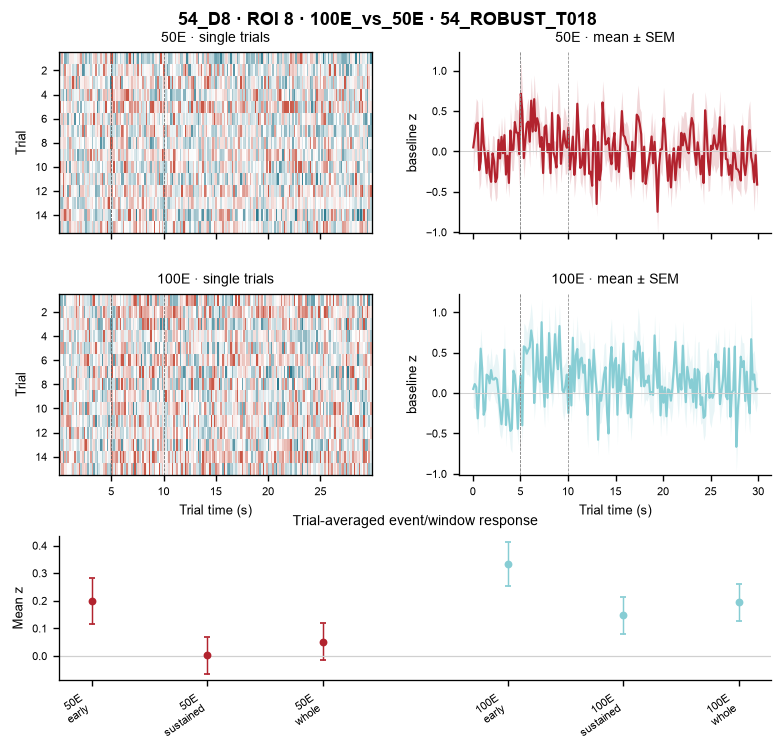
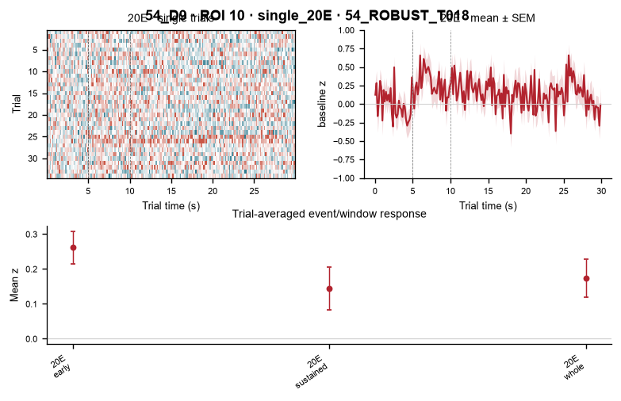

54_ROBUST_T018
The same tracked cell is shown across every session in which it is currently identified. Each session panel retains single-trial heatmaps first, then trial-averaged mean ± SEM and event-window summaries.
54_D8 · 100E_vs_50E · ROI 8
50E | 100E

54_D9 · single_20E · ROI 10
20E
